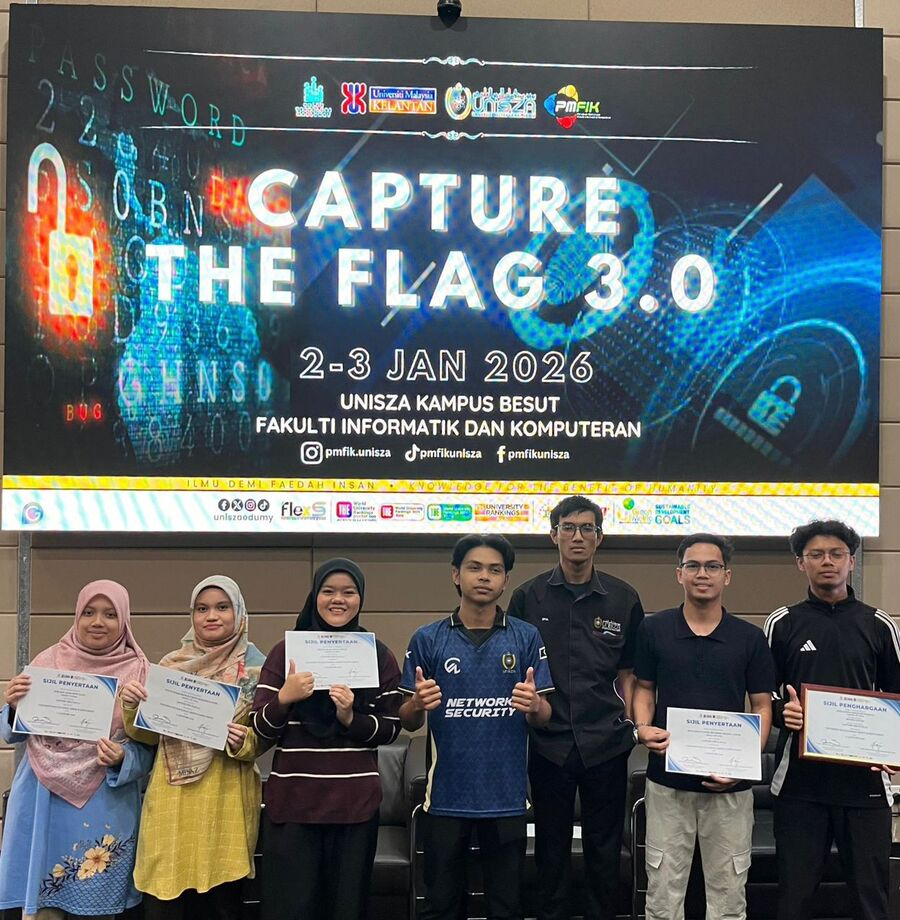
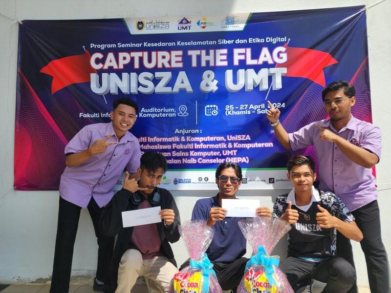

Successfully managed and facilitated a technical skills development program focusing on 3D computer-aided prototyping designs and micro-circuit logic simulations utilizing the Tinkercad ecosystem, enhancing foundational tech fluency for lower-secondary students at SMK Agama Wataniah.
Served as a core technical instructor for the 'Tinkercad Hero' initiative, teaching foundational 3D modeling techniques and interactive electronic circuit simulation to foster creative engineering and computational thinking among students at SMK Agama Wataniah.
Actively competed in the collaborative inter-university cybersecurity training match, executing operations under adversarial simulation constraints to parse digital forensic registry logs, trace persistent threat footprints, and analyze targeted packet captures.

Contributed defensive and tactical analysis within a team framework during the high-intensity cyber competition, solving complex multi-layered puzzles across classic cryptographic algorithms, system privilege escalation mitigations, and application layer assessments.
